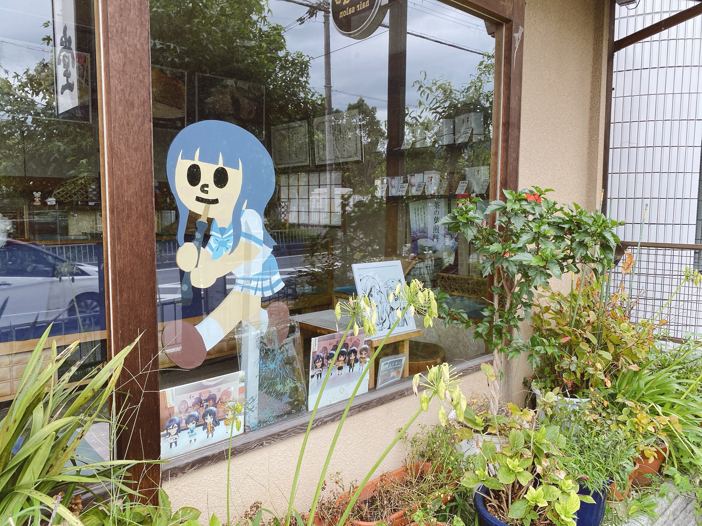
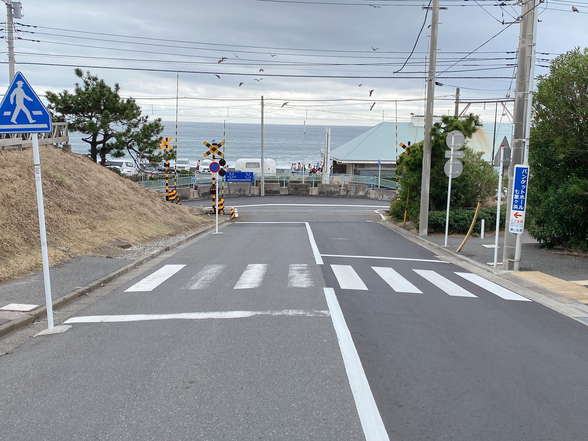
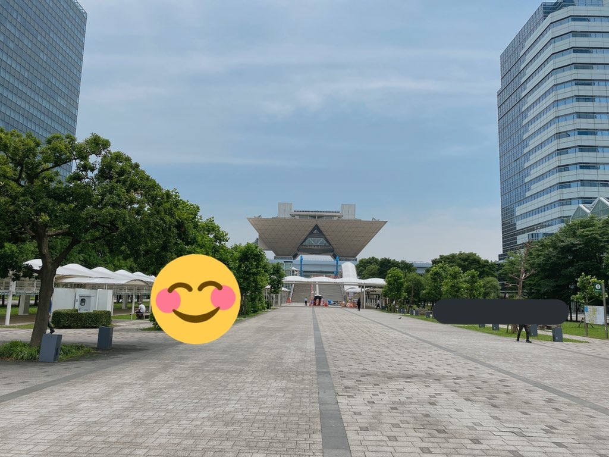

ANIME
アニメ
休みの日や隙間時間、よくテレビアニメを見ています。
広く浅く、いろんな作品をちょろちょろと。
旅行好きなこともあり、いわゆる聖地巡礼などもしたりしてます。
写真

京都に行った際の写真です。
このあたりの地域は響け！ユーフォニアムというアニメの舞台になっており、
どこに行っても見覚えのある景色ばかりで感動しました。

こちらの写真は鎌倉の踏切。
湘南、鎌倉近辺は様々なアニメで聖地になっていて、有名どころだとスラムダンクなどでしょうか。
僕自身はハナヤマタというアニメの聖地を見に行きました。

お台場はビッグサイトのお写真。
夏と冬にコミックマーケットというイベントが開催されていることで有名です。
アニメの舞台になることも多く、僕が好きなラブライブ！でも登場しました。